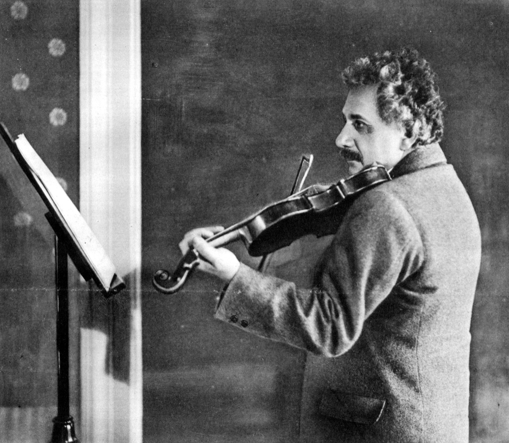

Задача трёх тел · глава 19 из 35
«Задача трёх тел»: Эйнштейн, монумент Маятника и Великий разрыв

Кратко
Новый сеанс: под небом с огромной луной, бывшей частью планеты, Эйнштейн играет на скрипке как нищий. Генсек ООН объясняет, что произошло: «Великий разрыв» — приливные силы солнц разорвали Трисолярис надвое, уничтожив цивилизацию № 191. Учёные выяснили, что когда-то в системе было двенадцать планет — и остальные уже поглощены солнцами. Трисолярианцы понимают, что задачу не решить и предсказаниями не спастись; остаётся одно — покинуть свою систему. Игра сообщает, что серверы скоро закроются и близка последняя сцена.
Главные моменты
- Эйнштейн-нищий со скрипкой — гений, ставший ненужным.
- Монумент Маятника — символ надежды на устойчивость.
- Из двенадцати планет осталась одна — и её дни сочтены.
- Решение: улететь к другой звезде.
Значение
Трисолярианцы окончательно отказываются от надежды предсказать свой мир — и переходят к плану переселения. Для Земли это значит одно: она цель.
Наука в этой главе
- Задача трёх тел правда